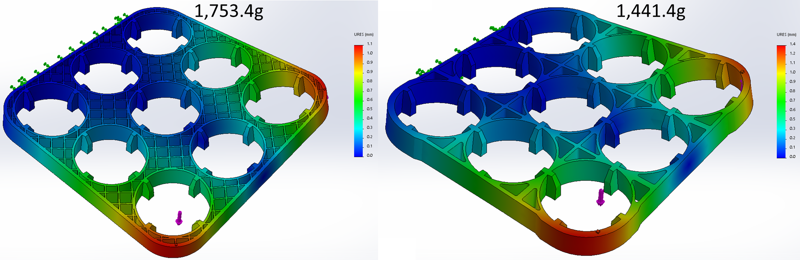
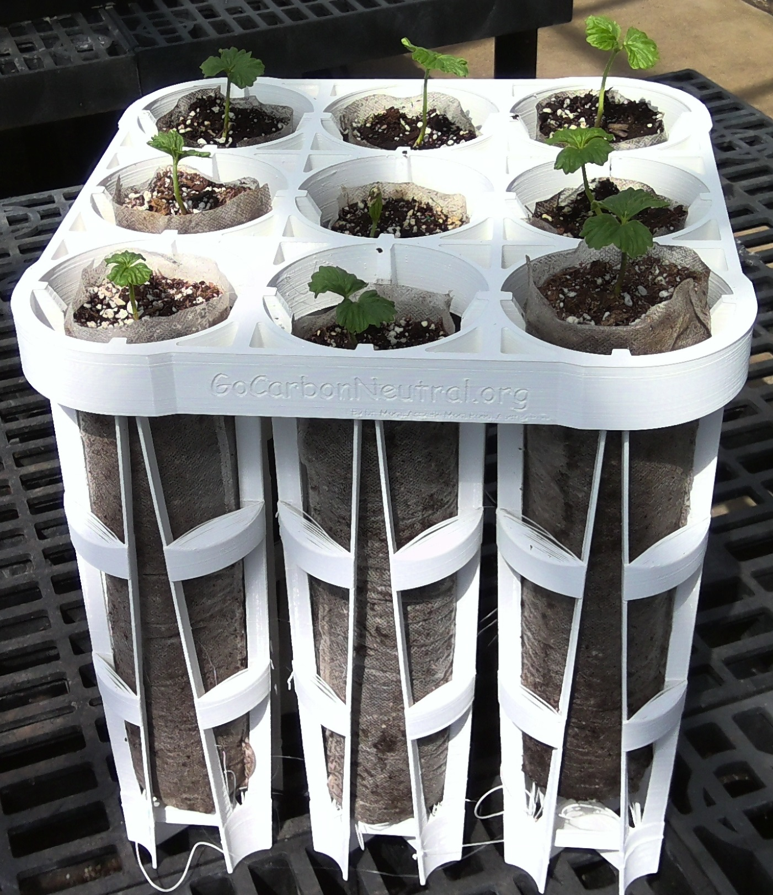
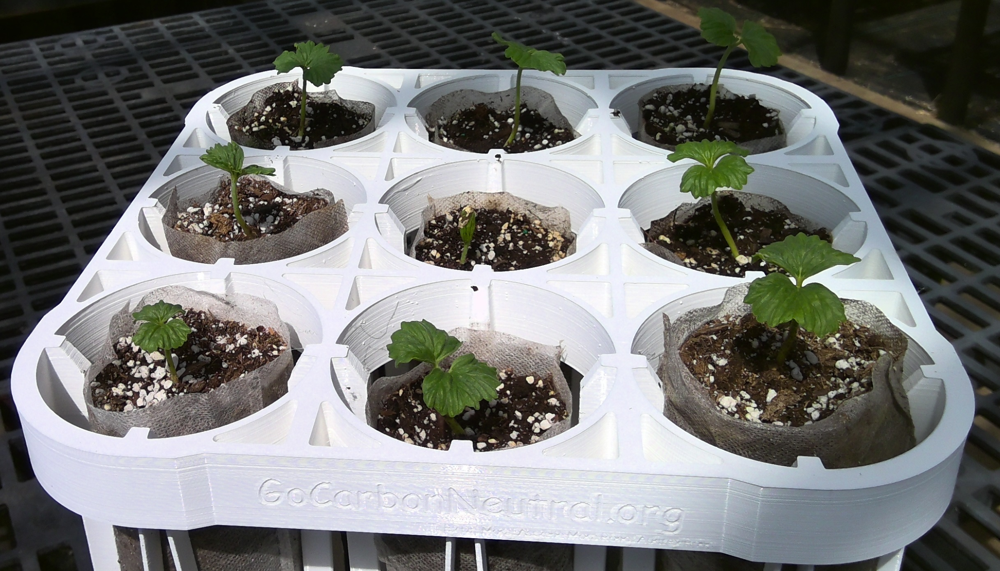
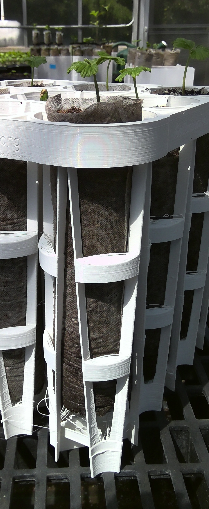

Mora's seedling tray
by Camilo Mora, Ph.D.
Summary: Much of the chance for survival of a tree start since you put the seed in a pot.
We have found that the use of breathing bags , which can be made of non-woven material or paper, provide just the extra “edge” that seedlings need to maximize their survival after planting.
However, those bags are difficult to handle at the nursery. While several trays are available commercially, they have several limitations.
This tray has been developed for the purpose of overcoming several shortcomings in the use of seedling bags at the nursery.
You can use the figure to the left for exploring the details of the tray.
Trees really love growing in these bags.


Example of native Hawaiian trees in "breathable" non-woven bags.
Problem of breathable bags:
There are, however, a few downsides to breathable bags.
If the bags are in contact with each other, the roots will move from bag to bag; so, you really need to keep the bags separated.
The bags are difficult to keep straight up in the nursery and should be prevented of touching the ground, as roots will develop pigtail.
Solution:
The solution to the problems of breathable bags is a tray. As my colleague Lars Jensen puts it,...a breathable pot "is only as good as the tray it’s in".
There are a few trays available commercially. However, they suffer from a few problems.
First, almost all available trays are very shallow, so you really cannot have deep root trees (a big flaw).
Second, as part of their design, likely to provide stiffness, these trays have many dark spaces or crevices/cavities, which are love by bugs that use them as home.
Finally, such trays cannot be stacked. It may not seem as a major problem but failure to stack the trays results in major costs for shipping, and forget about storage space.
So, we developed our own tray to overcome all the problems above.

Key attributes of the tray (only one cell shown for simplicity).
The tray allows stacking bags up to 12” tall; a huge advantage for root grow. One may want taller bags for deeper roots, but be mindful that you may have to dig the holes later on!. A 12” deep bag was a good compromise.
The tray allows keeping seedlings 1” apart from each other and 1.5” from the ground, which avoid root crossing between bags and maximizes air pruning, avoiding entirely root bounding and pigtail.
The tray does not have cavities, which maximizes air flow and ensures full on oxygenation to the roots, while avoiding crevices; there is no place for bugs to hide on in this tray!.
Finally, using second grade geometry, we utilized a cone shape for the tray, which allows the tray to be stacked while holding perfect cylindrical bags. Stacking one tray on another one adds only 1.5" in height to the volume occupied by the first tray.

Full tray. You can inspect the tray in the image at the top of this page.
Tray development:
We need to start by considering that the tray needs to be stacked. One geometrical figure that can be stacked on top of each other are cones. So lets first create a cone.

Second, you need the cone to hold a cylindrical bag. Hmm, how can you hold a cylinder with a cone? The solution is to create four cones and then extrude a cylinder among them. The edges of the cones can hold the cylinder, and in turn, several copies of the same structure can be stacked.


Next, you can add the ground isolation, or the component that will elevate the bag from the ground, needed to increase air pruning and avoid pigtail.


 First prototype
First prototype
 Second and third prototype
Second and third prototype
So I simplified the design and created a basic horizontal bar between neighboring bins.
 Fourth prototype
Fourth prototype
 Fifth prototype
Fifth prototype
Finally, I selected a simpler lateral contact.
 Sixth prototype
Sixth prototype
 Seventh prototype
Seventh prototype
 Failed prints.
Failed prints.
Now, that an optimal cell was selected, we can replicate it to create the tray by creating a grid of 3x3 cells.

First version of the tray.

First version of the tray printed.
So, back to the drawing board to find an structure that will increase torsion stiffness. I tried a lot of things.
Structures tested to increase torsion stiffness.

Attempt 1: Good in theory, prone to torsion in practice.

Attempt 2: Good in theory, prone to torsion in practice.

Attempt 3: Good in theory, prone to torsion in practice.

Attempt 4: Good in theory, prone to torsion in practice.

Attempt 5: Good in theory, prone to torsion in practice.

Attempt 6: Good in theory, prone to torsion in practice.



Structures with increased torsion stiffness.



File in Solidworks,
Step.